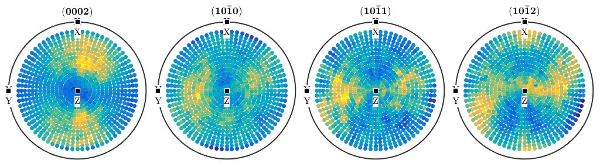
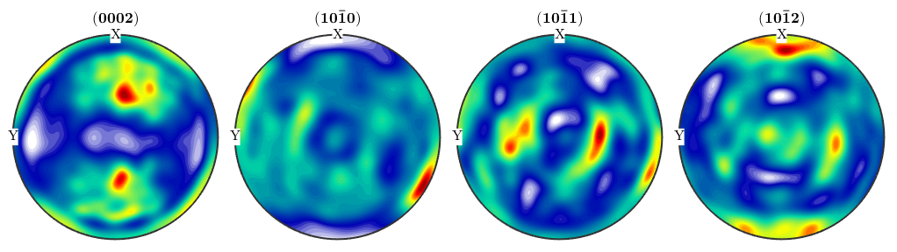

How to estimate ODFs from diffraction data.
The following script is automatically generated by the import wizard.
% specify scrystal and specimen symmetry cs = crystalSymmetry('-3m',[1.4,1.4,1.5]); % specify file names fname = {... fullfile(mtexDataPath,'PoleFigure','dubna','Q(10-10)_amp.cnv'),... fullfile(mtexDataPath,'PoleFigure','dubna','Q(10-11)(01-11)_amp.cnv'),... fullfile(mtexDataPath,'PoleFigure','dubna','Q(11-22)_amp.cnv')}; % specify crystal directions h = {Miller(1,0,-1,0,cs),[Miller(0,1,-1,1,cs),Miller(1,0,-1,1,cs)],Miller(1,1,-2,2,cs)}; % specify structure coefficients c = {1,[0.52 ,1.23],1}; % import pole figure data pf = loadPoleFigure(fname,h,cs,'superposition',c,... 'comment','Dubna Tutorial pole figures')
pf = PoleFigure crystal symmetry : -3m1, X||a*, Y||b, Z||c specimen symmetry: 1 h = (10-10), r = 72 x 19 points h = (01-11)(10-11), r = 72 x 19 points h = (11-22), r = 72 x 19 points
plot(pf)
odf = calcODF(pf)
------ MTEX -- PDF to ODF inversion ------------------
Call c-routine
initialize solver
start iteration
error: 6.6088E-01 4.6908E-01 2.9311E-01 1.8037E-01 1.4102E-01 1.2731E-01 1.1792E-01 1.1251E-01 1.0811E-01 1.0511E-01 1.0252E-01
Finished PDF-ODF inversion.
error: 1.0252E-01
alpha: 6.7323E+00 9.9451E+01 1.4170E+02
required time: 12s
odf = ODF
crystal symmetry : -3m1, X||a*, Y||b, Z||c
specimen symmetry: 1
Radially symmetric portion:
kernel: de la Vallee Poussin, halfwidth 5°
center: 19848 orientations, resolution: 5°
weight: 1
plotPDF(odf,Miller(0,0,1,cs),'antipodal')
| DocHelp 0.1 beta |